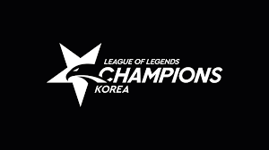

League of Legends Champions Korea

Background
What is the League of Legends
League of Legends is a game of MOBA (Multiplayer Online Battle Arena) genre, developed and serviced by
Riot Games. It gained high popularity by lowering barriers to entry compared to previous MOBA games, and
now has many users all over the world. It is one of the most popular PC games in the world. As of August
2016, it has reached more than 100 million monthly players, and as of August 2019, the number of
simultaneous access to peak hours of servers worldwide was more than 8 million. In addition, numerous
e-sports competitions are being held, including the League of Legend World Championship, which has the
largest number of viewers among the world's E-sports competitions, and the regional leagues which
includes League of Legends Champions Korea (LCK).
Legue of Legends website: Click here
What is the League of Legends Champions Korea
The first division of the Korean League of Legends competition. The league is as popular as the game.
It’s average viewers per day is o4.63 million and popular games are also watched by tens of millions of
audiences. To participate as a team in the league, a team must pay $10 million to join the league,
guarantee an annual salary of more than $60,000 to all players, and go through a separate screening
process even if a team satisfy these.
More information about LCK: Click on this link
How does the competition proceed?
It proceeds by Round-robin Tournament (All-play-all tournament). It is literally a way for one team in the league to compete with all other teams. To be more specific, based on the six teams, divide them into half, write from 1 to 3, from top to bottom on the left, and from top to bottom on the right from 4 to 6.Go clockwise and then engage in battle with first a team and symmetry and symmetry between a team of Battle, repeat it back into the first order. This is the first round and there are two rounds. After two rounds, they rank teams to drop half of the teams. After second round, it goes to postseason to determine the final winning team.